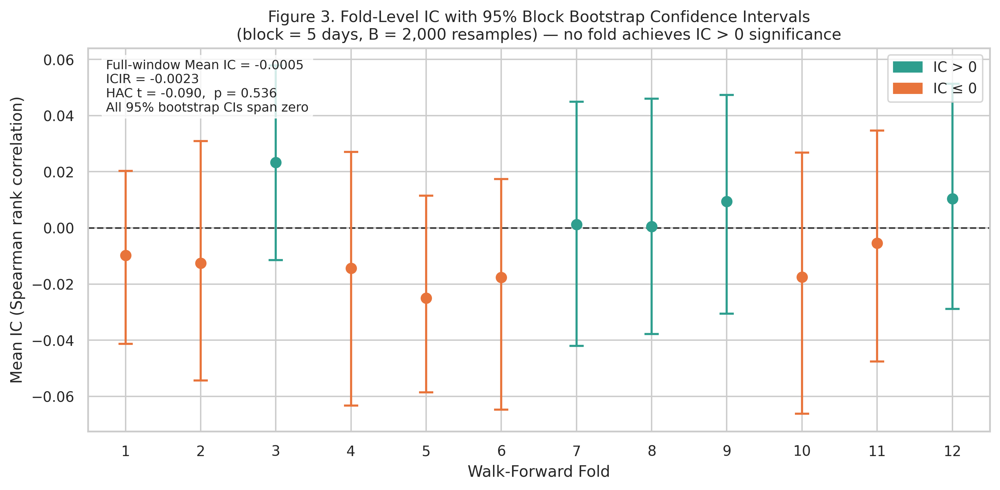
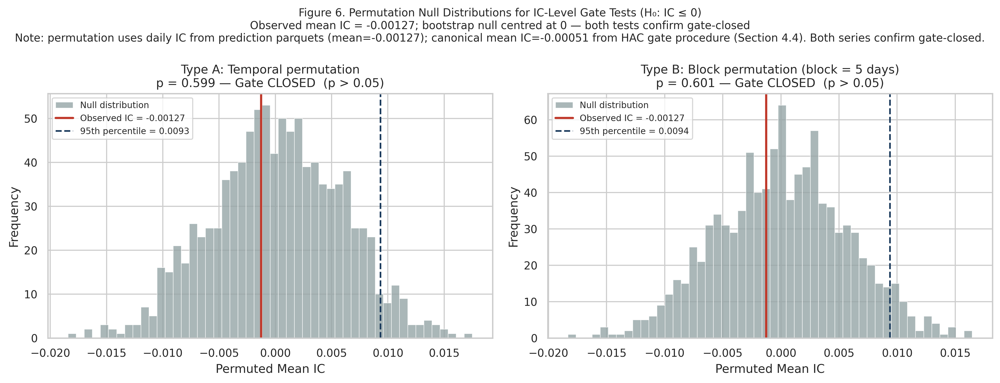
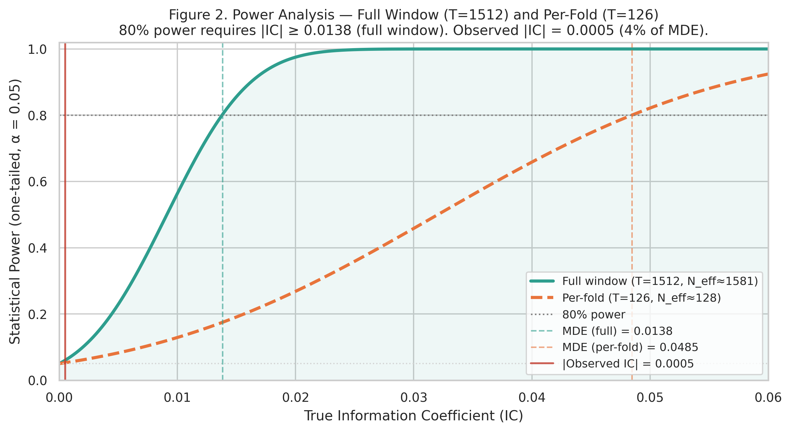

A statistically gated ML deployment in NASDAQ equities — where the honest null result is the entire finding.
All 12 walk-forward folds — every gate stayed closed
Most trading-model papers report wins. This one builds the exam a model must pass before it is allowed to trade real money — and then reports that its own model failed that exam twelve times out of twelve. That is the contribution: a statistical gate that separates "looks profitable in a backtest" from "provable skill". A naive statistical test would have green-lit a skill-less model 11.8% of the time; the full gate never did. One more twist: the model's probability estimates were nearly perfect even though it had zero predictive skill — proof that a well-calibrated model is not the same as a deployable one.
Most quant ML papers report in-sample alpha that vanishes out-of-sample. The selection bias is structural: thousands of model–feature combinations are searched, the winner is reported, and the search itself is never priced into the significance test. Can a financial ML model prove cross-sectional predictive skill before deployment — and what should happen when it cannot?
Deployment is governed by a statistical gate: a strategy only goes live in a fold if its out-of-sample edge clears a pre-registered significance threshold after multiple-testing correction — a Newey–West HAC t-test on daily information coefficients plus permutation confirmation. The gate is evaluated on a strict walk-forward schedule across 1,512 out-of-sample trading days, so no future information ever leaks backward.
The gate opened 0 of 12 walk-forward folds. No statistically defensible alpha survived honest out-of-sample testing — and that is the contribution. Calibration stayed excellent (ECE < 0.025) despite zero discrimination: calibration quality is not deployment readiness. The naive t-test alternative false-positives 11.8% of the time; the full gate, 0.0%.
False-positive rate on skill-less models (%)
Simulated null (no real signal): the naive test deploys anyway; the gate never does.



An honest null result engineered as methodology: the same audit-first stance the program applies to healthcare and lending, applied to the temptation-rich domain of trading. A discipline that publishes its nulls as loudly as its wins is the only one that can be trusted when the gate does open.